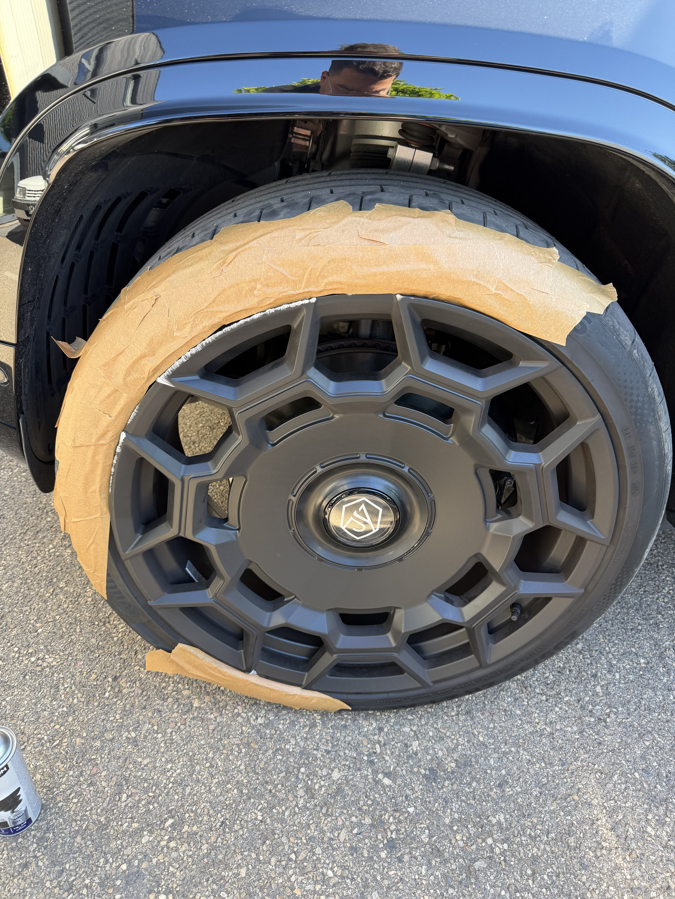
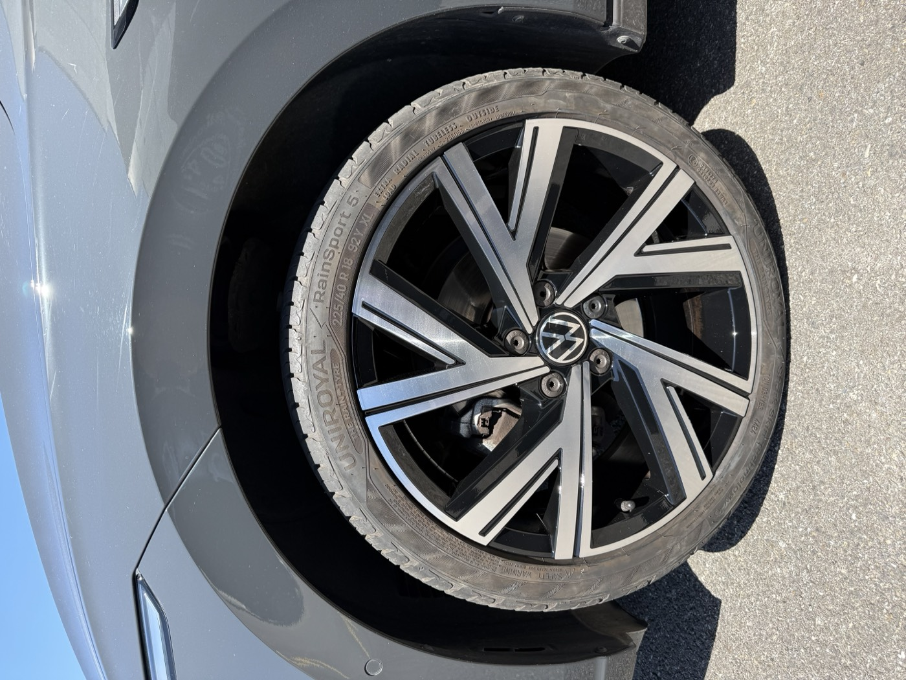

Le Land Rover Defender nouvelle génération (L663, depuis 2020) est l'un des véhicules les plus reconnaissables de la gamme premium actuelle. Ses jantes spécifiques — souvent en finition sombre contraste ou en bronze/anthracite — font partie de l'identité visuelle du véhicule.
Un client nous a contacté en fin de semaine : un choc sur une jante, des rayures visibles, et un impératif — le véhicule devait être présentable le lendemain. Pas de marge de manœuvre, pas de délai standard possible.
Pourquoi l'urgence sur jantes est possible — et dans quels cas
La retouche urgente n'est pas un service qu'on peut proposer sur toutes les interventions. Plusieurs conditions doivent être réunies :
- Type de dommage — Une retouche localisée (rayure, frottement sur un rayon ou la lèvre) se traite beaucoup plus vite qu'une rénovation complète. Si la zone abîmée est limitée, on peut travailler en cycle accéléré.
- Finition en stock — On doit avoir la teinte ou pouvoir la reproduire immédiatement. Pour les Defender, les finitions Dark Atlas (anthracite satiné) et Gloss Black sont dans notre référentiel.
- Disponibilité planning — L'urgence suppose qu'on ait un créneau immédiatement disponible. Sur WhatsApp, on évalue en quelques minutes si on peut bloquer un créneau pour le lendemain matin.
Sur ce Defender, les trois conditions étaient réunies : rayure localisée sur la lèvre, finition anthracite reproductible, créneau disponible le lendemain à 8h.
L'état avant intervention

Le dommage sur ce Defender était concentré sur la lèvre extérieure d'une jante : une rayure profonde d'environ 15 cm, avec enlèvement de matière. Ce type d'impact se produit généralement lors d'un choc avec un trottoir ou un plot de parking — le Defender est large (2,08m avec les rétroviseurs) et se gare souvent serré en ville.
La finition d'origine est une teinte anthracite satiné, spécifique Defender. Elle ne s'improvise pas — un anthracite trop clair ou trop froid serait visible à côté des trois autres jantes intactes.
L'intervention en vidéo
Intervention REYNOV — retouche urgente jante Land Rover Defender, Lyon
Le processus sur une retouche urgente localisée :
- Ponçage de la zone abîmée pour retirer les arêtes vives et préparer l'adhérence
- Application d'un apprêt sur la zone traitée uniquement
- Masquage précis des zones non traitées
- Reproduction de la teinte anthracite satiné par couches successives
- Vernis de protection bi-composant sur l'ensemble de la zone
- Temps de séchage accéléré — livraison le matin suivant
Le résultat

La retouche est invisible à l'œil nu. La teinte anthracite correspond parfaitement aux trois autres jantes — le spectrophotomètre nous a permis d'identifier la bonne valeur de teinte dès la première analyse.
Le client a récupéré son Defender à 9h le lendemain matin. Une heure après, il nous envoyait un message pour dire que son concessionnaire n'avait rien vu lors du passage en entretien prévu dans la journée.
Besoin d'une intervention urgente ?
Envoyez une photo sur WhatsApp — on vous dit dans l'heure si une intervention J+1 est possible.
WhatsApp — 07 63 00 43 85Questions fréquentes — intervention urgente sur jantes
Oui, selon la nature du dommage et nos disponibilités. Les retouches localisées (rayure sur la lèvre, frottement limité) se prêtent bien à une intervention express sous 24h. Pour une rénovation complète de plusieurs jantes, il faut compter 48 à 72h minimum. Envoyez vos photos sur WhatsApp pour une évaluation en temps réel.
Une retouche localisée sur jante Defender démarre généralement à partir de 80€ selon l'étendue du dommage. Le devis précis se fait sur photos. Pas de supplément urgence si le créneau est disponible.
Pour les interventions urgentes, on peut se déplacer ou vous demander d'amener la jante directement à notre atelier de La Mulatière (69350) selon la situation. L'atelier garantit les meilleures conditions de séchage pour un résultat optimal dans un délai court.
Oui. On utilise les mêmes matériaux : apprêt professionnel, peinture bi-composant et vernis de protection. La différence porte uniquement sur la zone traitée (localisée vs. complète), pas sur la qualité des produits ou du process.
Le canal le plus rapide est WhatsApp au 07 63 00 43 85 — envoyez vos photos directement, on évalue la faisabilité et on vous répond dans l'heure. Pour une urgence, précisez votre contrainte de délai dès le premier message.
Jante abîmée et délai serré ? Envoyez vos photos sur WhatsApp — on vous dit immédiatement si une intervention express est possible.
→ Voir aussi : Notre prestation rénovation · Rénovation BMW XM Lyon